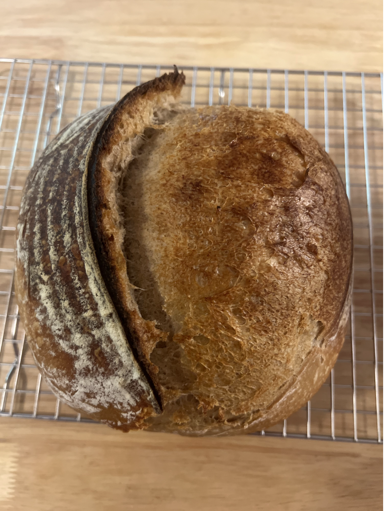
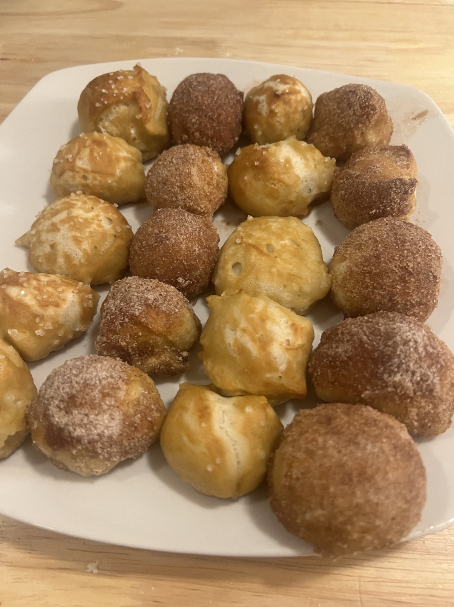
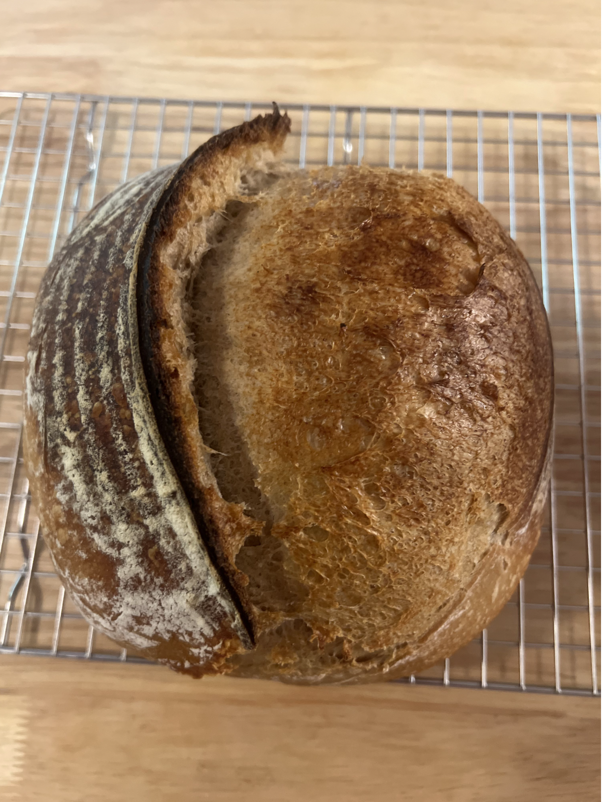
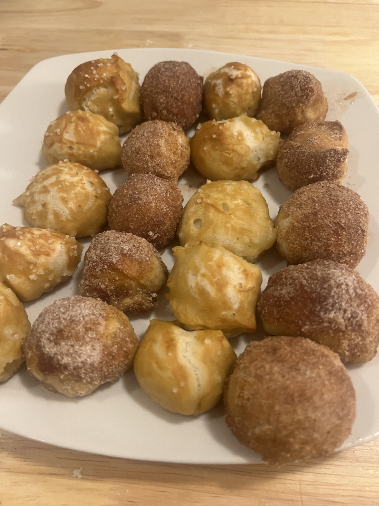

Smoked Brisket Recipe (Hot and Fast Method) on Charcoal Grill
I. Ingredients
- ~11-12lb Beef Brisket
- Spice Rub:
- 1/2 cup Brown Sugar
- 1/4 cup Paprika
- 1 tbs Salt
- 1 tbs Pepper
- 1 tbs Garlic Powder
- 1 tbs Onion Powder
- 1 tsp Mustard Powder
- Charcoal
- Hickory Wood Chunks
- Water
- Butcher Paper
II. Preparation Instructions
- Add spice rub ingredients in a bowl and whisk together until combined.
- Trim brisket (See video: Trimming Video):
- Trim fat until 1/4 inch of fat remains on top.
- Trim around edges until curved and smooth.
- Pat brisket dry with paper towels.
- Cover brisket liberally with spice rub.
- Place on a baking sheet with a baking rack. Place in the fridge overnight or until ready to use.
III. Cooking Instructions
- Light charcoal in chimney starter: use a wad of paper and cover with neutral cooking oil. Light with a lighter. Place under the chimney starter and fill starter with charcoal (You will need to do this several times throughout the cooking process).
- Place a pan filled ~halfway with water on top of the fuel grate on one side.
- Once charcoal is white hot, dump charcoal onto the other side of the fuel grate.
- Place a grill grate above the fuel grate. Place an ambient temperature probe on the grill grate above the water pan.
- Place the grill lid with the air vent side above the water pan.
- Allow the grill to preheat to 275 - 300 degrees F.
- Open grill, place brisket over water pan.
- Let cook for 6-7 hours, or until the internal temperature is at 165-180 degrees F.
- Remove brisket, wrap tightly in butcher paper.
- Place brisket back on grill for 2-4 hours, or until internal temperature of both flat and point of brisket is at 200-205 degrees F and temperature probe penetrates meat like room temperature butter.
- Remove brisket from gril
- Place in low temp oven for at least 2 hours and until ready to use.
- Slice and enjoy!
a
a
a
 


